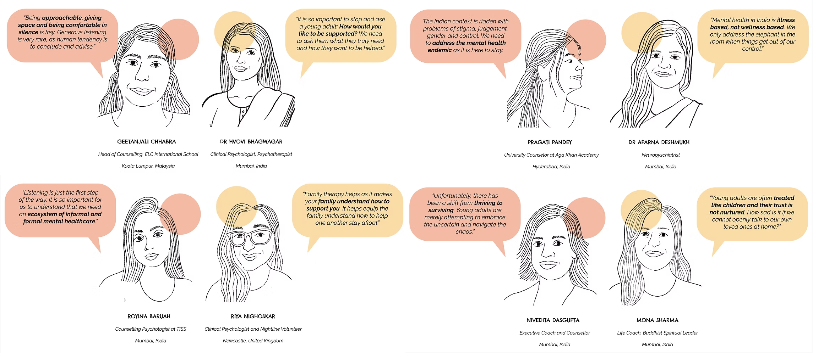
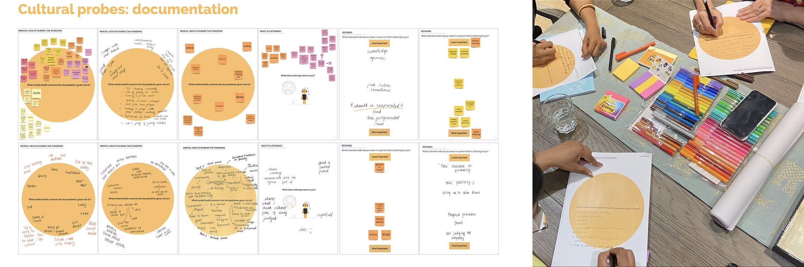
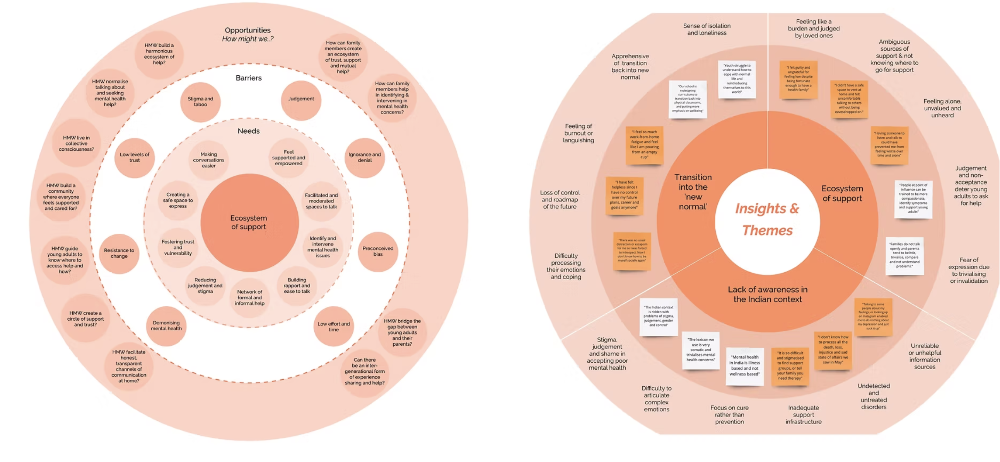

The Challenge
How might we destigmatise mental health in young adults by starting at home?
India faces a significant mental health challenge, particularly among young adults aged 18 to 25. The COVID-19 pandemic exacerbated an already difficult situation: in 2020, India saw a 26% increase in anxiety and 28% increase in depression. Yet stigma around mental health remains deeply embedded, particularly within family systems.
Research identified a critical gap: young adults at the onset of poor mental health were falling through the cracks, as families either trivialised their experiences or were simply not equipped to respond. The challenge was not clinical. It was relational.
"There is so much value in exploring how service design facilitates conversations."
Vuslat FoundationMy Approach
Three months of immersive fieldwork in India
The project deployed an iterative, participatory approach across three months of extensive fieldwork conducted in India. Research involved 20 in-depth interviews with young adults, 9 expert interviews with mental health professionals, 10 cultural probe participants, and 5 co-discovery and co-design sessions.
A key methodological contribution was the design of bespoke cultural probes. There are innovative research tools specifically created to make it simpler to discuss difficult, personal topics around mental health. These generated rich qualitative data that conventional interviews could not access.



What I Did
A pivot that changed everything
The synthesis revealed a critical insight that shifted the entire direction of the service. In doing so, an epiphany was reached: there was a need to shift from directing the service to young adults, to those that support the mental health of young adults at home. Thus, the focus was shifted to understanding how families, especially parents, may help young adults at the stage of the onset of mental health concerns.
Our Herd is a dual-channel wellbeing service. The analogue toolkit comprises a set of conversation coaster-cards designed for use during shared family time such as chai times, mealtimes, evenings together. The cards provide indirect and direct communication cues to foster trust, vulnerability, and generous listening between family members.
The digital platform allows users to connect with others, attend workshops and events, and access Triyoke's counselling services running in parallel to support families practising transparent conversations at home.



Outcomes & Impact
What changed
The service was presented at the MA Service Design Showcase at the University of the Arts, London, and to key stakeholders including Vuslat Foundation and Triyoke. The project generated significant stakeholder interest, with mental health professionals expressing willingness to recommend the tools to families they work with.
The project demonstrated that service design can make a meaningful contribution to destigmatising mental health — not by confronting stigma directly, but by creating conditions for honest conversation to begin.
Key outcome
“Not just thought-provoking, but also action-inducing. It’s great how service design can help destigmatise the prevalent mental health taboo by sparking conversations.” - Industry Expert


What I learned
The pivot midway through this project. from designing for young adults to designing for the family system around them, was the most important design decision. It came from taking the research seriously rather than the brief literally.
This project also deepened my understanding of cultural probes as a research method. Designing tools that make difficult topics accessible is itself a form of service design; and often more important than the service you eventually create.
If I were doing this again: I would involve parents in the co-design sessions from an earlier stage. Their perspective transformed our understanding and having them in the room sooner would have accelerated that shift.